About Me
I am a postdoctoral researcher at ETH Zurich since 2019. I did my PhD at the University of Stuttgart with the dissertation title: Visual Analytics of Eye-Tracking and Video Data. It received the best dissertation award from the Informatik Forum Stuttgart, as well as an honorable mention dissertation award from the IEEE VGTC VPG (Visualization Pioneers Group).
My research is focused on visual analytics methodology for video and eye tracking analysis. By combining interactive visualization with techniques from computer vision and machine learning, we provide researchers and data scientists new ways to look at their data, explore it, and understand results from automatic processing steps.
Further, eye tracking allows us to better understand how people perceive and interact with the world. Hence, my second research interest is in designing and evaluating visualization and interaction techniques that involve gaze measurements. This way we could, for instance, create gaze-based smart subtitles that appear where you look at. With eye tracking, we can also find out how people solve tasks visually when watching videos, interacting with computer software, or moving around in the real world.
My Research
2020
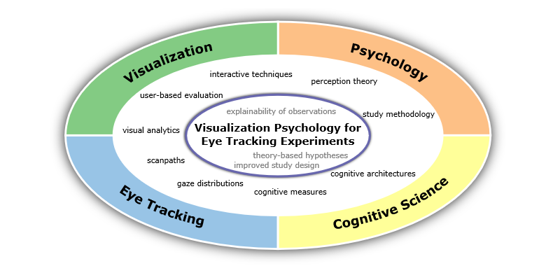
What We See and What We Get from Visualization: Eye Tracking Beyond Gaze Distributions and Scanpaths (2020)
K. Kurzhals, M. Burch, D. Weiskopf
Technical progress in hardware and software enables us to recordgaze data in everyday situations and over long time spans. Among a multitude of research opportunities, this technology enables visualization researchers to catch a glimpse behind performance measures and into the perceptual and cognitive processes of people using visualization techniques. The majority of eye tracking studies performed for visualization research is limited to the analysis of gaze distributions and aggregated statistics, thus only covering a small portion of insights that can be derived from gaze data. We argue thatincorporating theories and methodology from psychology and cognitive science will benefit the design and evaluation of eye tracking experiments for visualization. This position paper outlines our experiences with eye tracking in visualization and states the benefits that an interdisciplinary research field on visualization psychology might bring for better understanding how people interpret visualizations.
IEEE VIS Workshop on Visualization Psychology
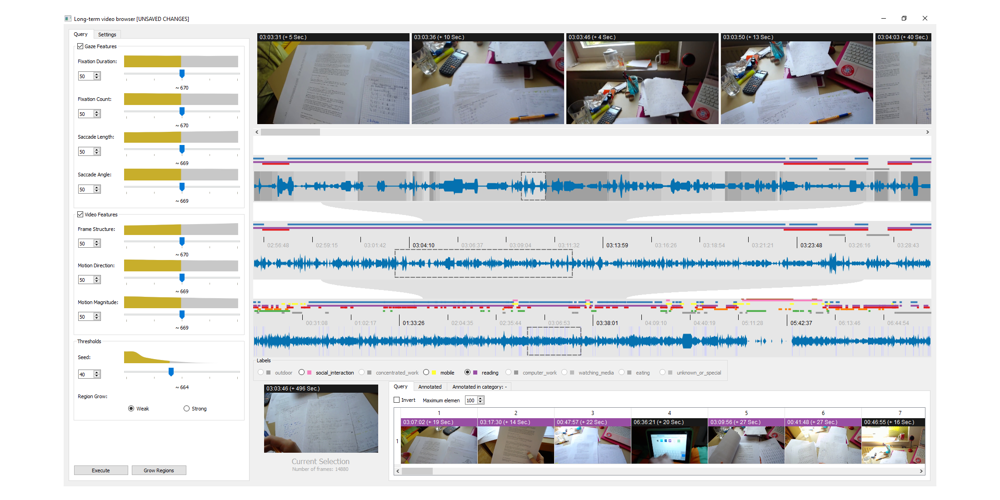
Visual Analytics and Annotation of Pervasive Eye Tracking Video (2020)
K. Kurzhals, N. Rodrigues, M. Koch, M. Stoll, A. Bruhn, A. Bulling, D. Weiskopf
We propose a new technique for visual analytics and annotation of long-term pervasive eye tracking data for which a combined analysis of gaze and egocentric video is necessary. Our approach enables two important tasks for such data for hour-long videos from individual participants: (1) efficient annotation and (2) direct interpretation of the results. Exemplary time spans can be selected by the user and are then used as a query that initiates a fuzzy search of similar time spans based on gaze and video features. In an iterative refinement loop, the query interface then provides suggestions for the importance of individual features to improve the search results. A multi-layered timeline visualization shows an overview of annotated time spans. We demonstrate the efficiency of our approach for analyzing activities in about seven hours of video in a case study and discuss feedback on our approach from novices and experts performing the annotation task.
ACM Symposium on Eye Tracking Research and Applications
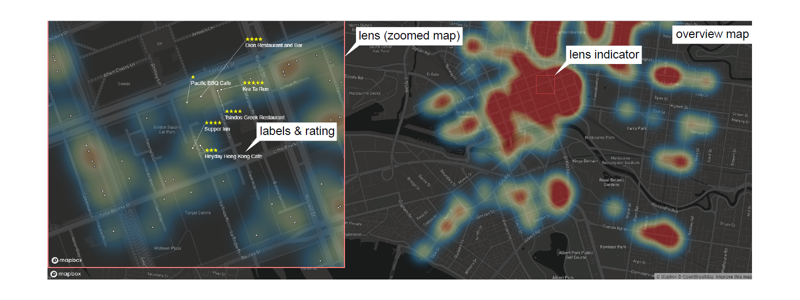
Gaze-Adaptive Lenses for Feature-Rich Information Spaces (2020)
F. Göbel, K. Kurzhals, V. R. Schinazi, P. Kiefer, M. Raubal
The inspection of feature-rich information spaces often requires supportive tools that reduce visual clutter without sacrificing details. One common approach is to use focus+context lenses that provide multiple views of the data. While these lenses present local details together with global context, they require additional manual interaction. In this paper, we discuss the design space for gaze-adaptive lenses and present an approach that automatically displays additional details with respect to visual focus. We developed a prototype for a map application capable of displaying names and star-ratings of different restaurants. In a pilot study, we compared the gaze-adaptive lens to a mouse-only system in terms of efficiency, effectiveness, and usability. Our results revealed that participants were faster in locating the restaurants and more accurate in a map drawing task when using the gaze-adaptive lens. We discuss these results in relation to observed search strategies and inspected map areas.
ACM Symposium on Eye Tracking Research and Applications
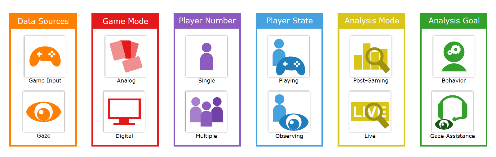
Visual Analysis of Eye Movements During Game Play (2020)
M. Burch, K. Kurzhals
Eye movements indicate visual attention and strategies during game play, regardless of whether in board, sports, or computer games. Additional factors such as individual vs. group play and active playing vs. observing game play further differentiate application scenarios for eye movement analysis. Visual analysis has proven to be an effective means to investigate and interpret such highly dynamic spatio-temporal data. In this paper, we contribute a classification strategy for different scenarios for the visual analysis of gaze data during game play. Based on an initial sample of related work, we derive multiple aspects comprising data sources, game mode, player number, player state, analysis mode, and analysis goal. We apply this classification strategy to describe typical analysis scenarios and research questions as they can be found in related work. We further discuss open challenges and research directions for new application scenarios of eye movements in game play.
PLEY – Eye Tracking in Games and Play Workshop
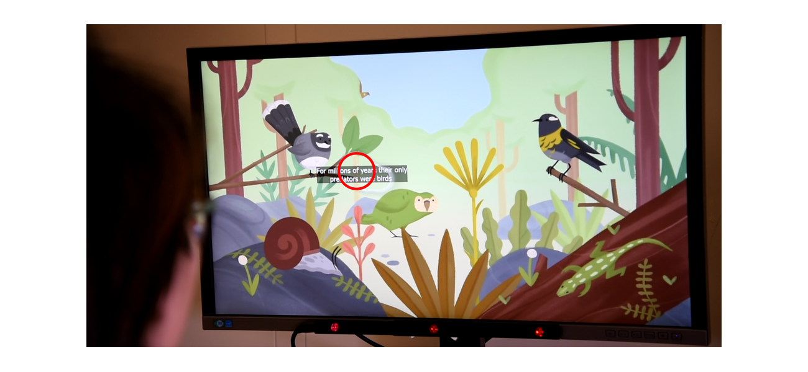
A View on the Viewer: Gaze-Adaptive Captions for Videos (2020)
K. Kurzhals, F. Göbel, K. Angerbauer, M. Sedlmair, M. Raubal
Subtitles play a crucial role in cross-lingual distribution of multimedia content and help communicate information where auditory content is not feasible (loud environments, hearing impairments, unknown languages). Established methods utilize text at the bottom of the screen, which may distract from the video. Alternative techniques place captions closer to related content (e.g., faces) but are not applicable to arbitrary videos such as documentations. Hence, we propose to leverage live gaze as indirect input method to adapt captions to individual viewing behavior. We implemented two gaze-adaptive methods and compared them in a user study (n=54) to traditional captions and audio-only videos. The results show that viewers with less experience with captions prefer our gaze-adaptive methods as they assist them in reading. Furthermore, gaze distributions resulting from our methods are closer to natural viewing behavior compared to the traditional approach. Based on these results, we provide design implications for gaze-adaptive captions.
CHI Conference on Human Factors in Computing Systems
Gaze-Aware Mixed-Reality: Addressing Privacy Issues with Eye Tracking (2020)
F. Göbel, K. Kurzhals, M. Raubal, V. R. Schinazi
Current Mixed Reality (MR) systems rely on a variety of sensors (e.g., cameras, eye tracking, GPS) to create immersive experiences. Data collected by these sensors are necessary to generate detailed models of a user and the environment that allow for different interactions with the virtual and the real world. Generally, these data contain sensitive information about the user, objects, and other people that make up the interaction. This is particularly the case for MR systems with eye tracking, because these devices are capable of inferring the identity and cognitive processes related to attention and arousal of a user. The goal of this position paper is to raise awareness on privacy issues that result from aggregating user data from multiple sensors in MR. Specifically, we focus on the challenges that arise from collecting eye tracking data and outline different ways gaze data may contribute to alleviate some of the privacy concerns from aggregating sensor data.
CHI Workshop on Exploring Potentially Abusive Ethical, Social and Political Implications of Mixed Reality in HCI
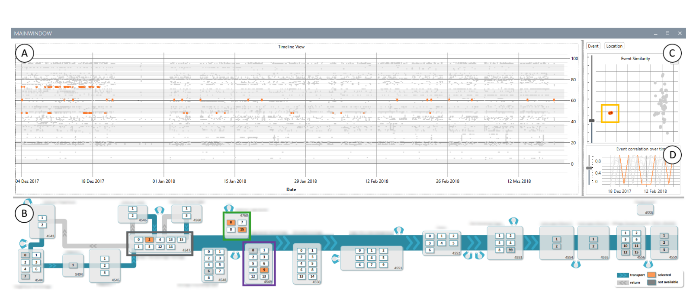
Visual Analysis for Spatio-Temporal Event Correlation in Manufacturing (2020)
D. Herr, K. Kurzhals, T. Ertl
The analysis of events with spatio-temporal context and their interdependencies is a crucial task in the manufacturing domain. In general, understanding this context, for example investigating error messages or alerts is important to take corrective actions. In the manufacturing domain, comprehending the relations of errors is often based on the technicians’ experience. Validation of cause-effect relations is necessary to understand if an effect has a preceding causality, eg, if an error is the result of multiple issues from previous working steps. We present an approach to investigate spatio-temporal relations between such events. Based on a time-sensitive correlation measure, we provide multiple coordinated views to analyze and filter the data. In collaboration with an industry partner, we developed a visual analytics approach for error logs reported by machines that covers a multitude of analysis tasks. We present a case study based on real-world event logs of an assembly line with feedback from our industry partner’s domain experts. Furthermore, we discuss how our approach is applicable in other domains.
Hawaii International Conference on System Sciences
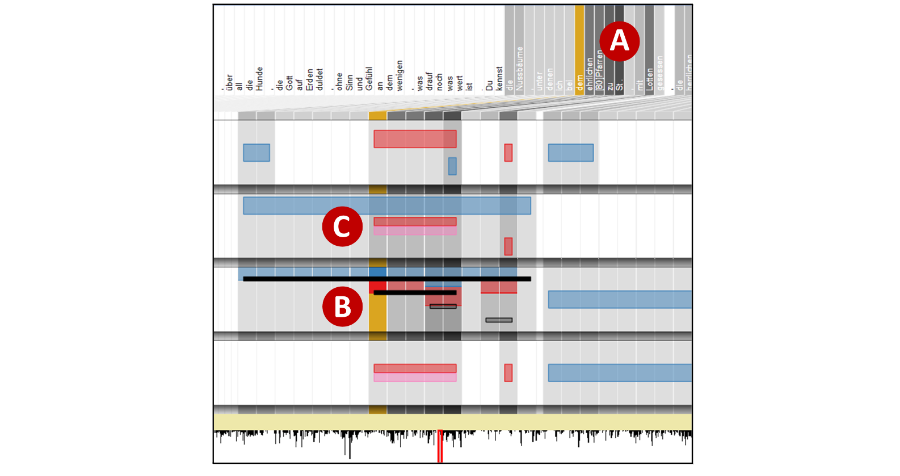
AnnoXplorer: A Scalable, Integrated Approach for the Visual Analysis of Text Annotations (2020)
M. Baumann, H. Minasyan, K. Kurzhals, T. Ertl
Text annotation data in terms of a series of tagged text segments can pose scalability challenges within the dimensions of quantity (long texts bearing many annotations), configuration (overlapping annotations or annotations with multiple tags), or source (annotations by multiple annotators). Accordingly, exploration tasks such as navigating within a long annotated text, recognizing patterns in the annotation data or assessing differences between annotators can be demanding. Our approach of an annotation browser deals with all of these data and task challenges simultaneously by providing a continuous range of views on large amounts of complex annotation data from multiple sources. We achieve this by using a combined geometric/semantic zooming mechanism that operates on an abstract representation of the sequence of a text’s tokens and the annotations thereupon, which is interlinked with a view on the text itself. The approach was developed in the context of a joint project with researchers from fields concerned with textual sources. We derive our approach’s requirements from a series of tasks that are typical in natural language processing and digital humanities, show how it supports these tasks, and discuss it in the light of the feedback we got from our domain experts.
International Joint Conference on Computer Vision, Imaging and Computer Graphics Theory and Applications (VISIGRAPP)
2019
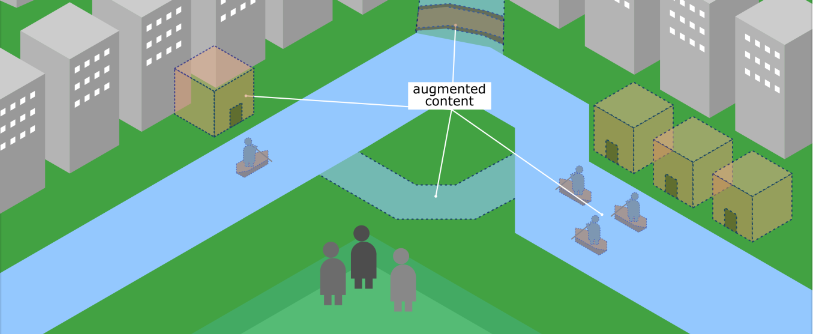
Towards Seamless Mobile Learning with Mixed Reality on Head-Mounted Displays (2019)
C. Sailer, D. Rudi, K. Kurzhals, M. Raubal
This paper discusses the opportunities and challenges of utilizing optical (head-mounted) displays for mixed reality in the context of seamless mobile learning. Recent technological developments have significantly improved the capabilities and the mobility of head-mounted displays. Future displays, frequently referred to as data glasses, will be even more lightweight, have a larger naturally sized field of view, and will redefine the standing of mixed reality in economy and society. We envision that these immersive displays will introduce a new world of didactical opportunities and novel context-aware designs for seamless mobile learning, particularly in outdoor learning environments. Our discussion is based on an extensive literature review and first-hand experience with applying this type of novel technology in learning scenarios. Our considerations comprise new ways of collaborative learning and communication between peers, the role of human-computer interaction, the visualization of learning content, and exemplary learning scenarios with mixed reality. We further provide an overview of potential research directions to be pursued in the near future.
World Conference on Mobile and Contextual Learning
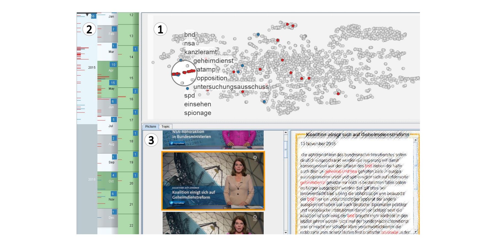
Visual Exploration of Topics in Multimedia News Corpora (2019)
M. John, K. Kurzhals, T. Ertl
The increasing availability of digital multimedia content has led to the need of new approaches for the analysis of large databases containing video and associated data, for example, subtitles. Visualization provides valuable insights of such dataset, complementing approaches solely based on techniques for knowledge discovery in databases and information retrieval. Hence, visual analytics, combining automatic processing with interactive data visualization, has proven to be an effective means to explore and interpret such data. The analysis of news corpora represents a typical task for such a scenario. Domain experts such as journalists and social science scholars require an overview of important topics, the temporal coherence of events, and they should be able to compare different topics. We present a visual analytics approach that aims to support these tasks with automatic video preprocessing, topic extraction, clustering, and dimensionality reduction. Coordinated linked views support the flexible inspection of the dataset and the processed results. We further discuss the application of our approach in a usage scenario, inspecting the dataset of a daily news broadcast of the year 2015.
International Conference Information Visualisation
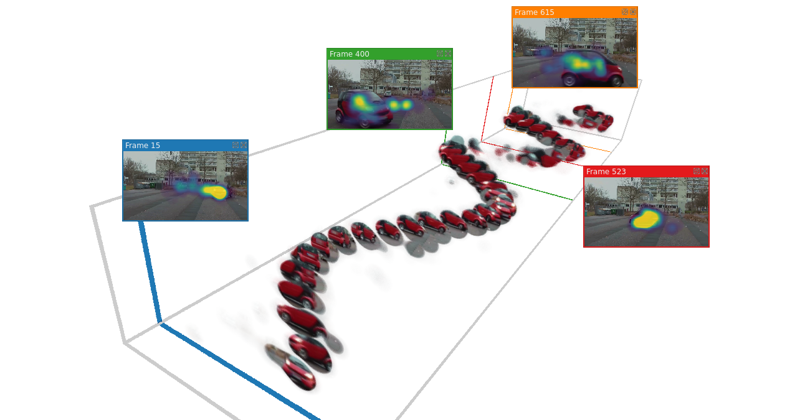
Space-Time Volume Visualization of Gaze and Stimulus (2019)
V. Bruder, K. Kurzhals, S. Frey, D. Weiskopf, T. Ertl
We present a method for the spatio-temporal analysis of gaze data from multiple participants in the context of a video stimulus. For such data, an overview of the recorded patterns is important to identify common viewing behavior (such as attentional synchrony) and outliers. We adopt the approach of space-time cube visualization, which extends the spatial dimensions of the stimulus by time as the third dimension. Previous work mainly handled eye tracking data in the space-time cube as point cloud, providing no information about the stimulus context. This paper presents a novel visualization technique that combines gaze data, a dynamic stimulus, and optical flow with volume rendering to derive an overview of the data with contextual information. With specifically designed transfer functions, we emphasize different data aspects, making the visualization suitable for explorative analysis and for illustrative support of statistical findings alike.
ACM Symposium on Eye Tracking Research and Applications
2018
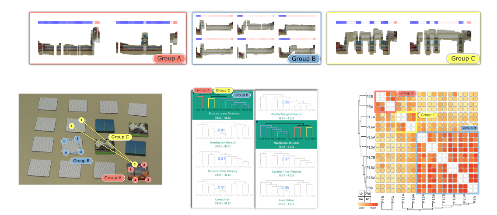
Image-based Scanpath Comparison with Slit-Scan Visualization (2018)
M. Koch, K. Kurzhals, D. Weiskopf
The comparison of scanpaths between multiple participants is an important analysis task in eye tracking research. Established methods typically inspect recorded gaze sequences based on geometrical trajectory properties or strings derived from annotated areas of interest (AOIs). We propose a new approach based on image similarities of gaze-guided slit-scans: For each time step, a vertical slice is extracted from the stimulus at the gaze position. Placing the slices next to each other over time creates a compact representation of a scanpath in the context of the stimulus. These visual representations can be compared based on their image similarity, providing a new measure for scanpath comparison without the need for annotation. We demonstrate how comparative slit-scan visualization can be integrated into a visual analytics approach to support the interpretation of scanpath similarities in general.
ACM Symposium on Eye Tracking Research and Applications
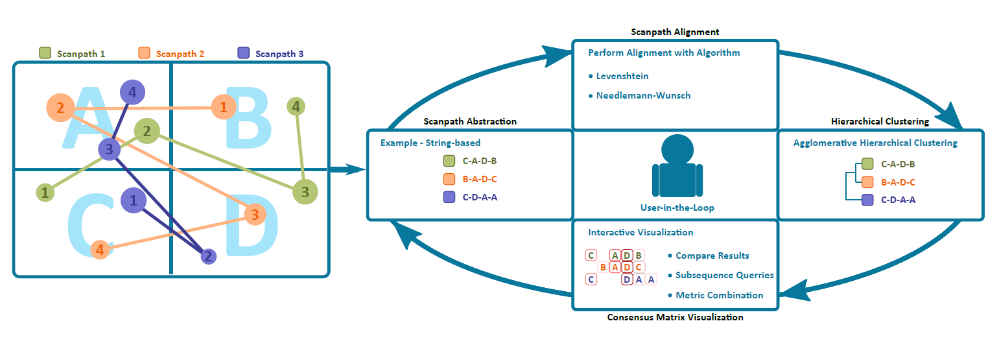
EyeMSA: Exploring Eye Movement Data with Pairwise and Multiple Sequence Alignment (2018)
M. Burch, K. Kurzhals, N. Kleinhans, D. Weiskopf
Eye movement data can be regarded as a set of scan paths, each corresponding to one of the visual scanning strategies of a certain study participant. Finding common subsequences in those scan paths is a challenging task since they are typically not equally temporally long, do not consist of the same number of fixations, or do not lead along similar stimulus regions. In this paper we describe a technique based on pairwise and multiple sequence alignment to support a data analyst to see the most important patterns in the data. To reach this goal the scan paths are first transformed into a sequence of characters based on metrics as well as spatial and temporal aggregations. The result of the algorithmic data transformation is used as input for an interactive consensus matrix visualization. We illustrate the usefulness of the concepts by applying it to formerly recorded eye movement data investigating route finding tasks in public transport maps.
ACM Symposium on Eye Tracking Research and Applications
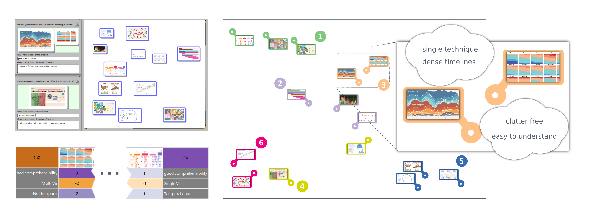
Exploring the Visualization Design Space with Repertory Grids (2018)
K. Kurzhals, D. Weiskopf
There is an ongoing discussion in the visualization community about the relevant factors that render a visualization effective, expressive, memorable, aesthetically pleasing, etc. These factors lead to a large design space for visualizations. To explore this design space, qualitative research methods based on observations and interviews are often necessary. We describe an interview method that allows us to systematically acquire and assess important factors from subjective answers by interviewees. To this end, we adopt the repertory grid methodology in the context of visualization. It is based on the personal construct theory: each personality interprets a topic based on a set of personal, basic constructs expressed as contrasts. For the individual interpretation of visualizations, this means that these personal terms can be very different, depending on numerous influences, such as the prior experiences of the interviewed person. We present an interviewing process, visual interface, and qualitative and quantitative analysis procedures that are specifically devised to fit the needs of visualization applications. A showcase interview with 15 typical static information visualizations and 10 participants demonstrates that our approach is effective in identifying common constructs as well as individual differences. In particular, we investigate differences between expert and nonexpert interviewees. Finally, we discuss the differences to other qualitative methods and how the repertory grid can be embedded in existing theoretical frameworks of visualization research for the design process.
Computer Graphics Forum
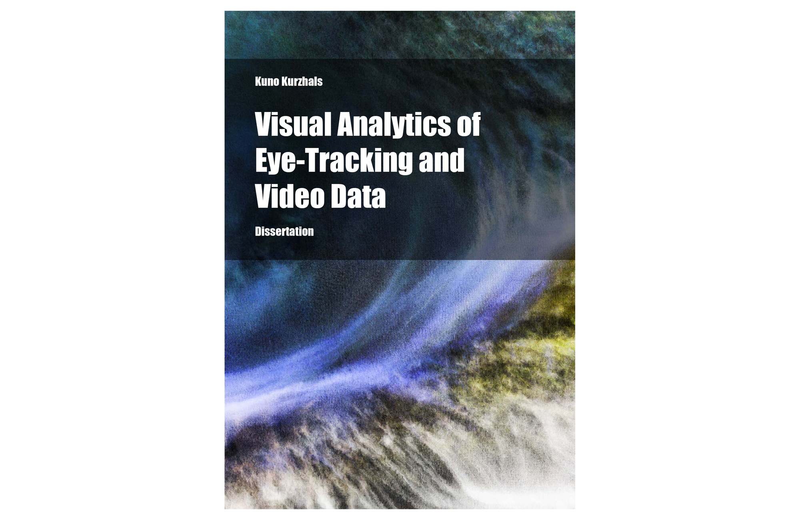
Dissertation: Visual Analytics of Eye-Tracking and Video Data (2018)
K. Kurzhals
Eye tracking, i.e., the detection of gaze points, becomes increasingly popular in numerous research areas as a means to investigate perceptual and cognitive processes. In comparison to other evaluation methods, eye tracking provides insights into the distribution of attention and sequential viewing behavior, which are essential for many research questions. For visualization research, such insights help assess a visualization design and identify potential flaws. Gaze data coupled with a visual stimulus poses a complex analysis problem that is approached by statistical and visual methods. Statistical methods are often limited to hypothesis-driven evaluation and modeling of processes. Visualization is applied to confirm statistical results and for exploratory data analysis to form new hypotheses. Surveying the state of the art of visualizations for eye tracking shows a deficiency of appropriate methods, particularly for dynamic stimuli (e.g., videos). Video visualization and visual analytics provide methods that can be adapted to perform the required analysis processes. The automatic processing of video and gaze data is combined with interactive visualizations to provide an overview of the data, support efficient browsing, detect interesting events, and annotate important parts of the data. The techniques developed for this thesis focus on the analysis of videos from remote and from mobile eye tracking. The discussed remote eye-tracking scenarios consist of one video that is investigated by multiple participants. Mobile eye tracking comprises scenarios in which participants wear glasses with a built-in device to record their gaze. Both types of scenarios pose individual challenges that have to be addressed for an effective analysis. In general, the comparison of gaze behavior between participants plays an important role to detect common behavior and outliers. This thesis addresses the topic of eye tracking and visualization bidirectionally: Eye tracking is applied in user studies to evaluate visualization techniques beyond established performance measures and questionnaires. The current application of eye tracking in visualization research is surveyed. Further, it is discussed how existing methodology can be extended to incorporate eye tracking for future analysis scenarios. Vice versa, a set of new visualization techniques for data from remote and mobile eye-tracking devices are introduced that support the analysis of gaze behavior in general. Here, techniques for raw data and for data with annotations are introduced, as well as approaches to perform the tedious annotation process more efficiently.
OPUS - Publication Server of the University of Stuttgart
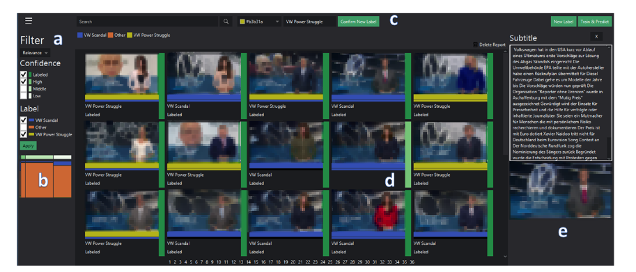
Visual Interactive Labeling of Large Multimedia News Corpora (2018)
Q. Han, M. John, K. Kurzhals, J. Messner, T. Ertl
The semantic annotation of large multimedia corpora is essential for numerous tasks. Be it for the training of classification algorithms, efficient content retrieval, or for analytical reasoning, appropriate labels are often the first necessity before automatic processing becomes efficient. However, manual labeling of large datasets is time-consuming and tedious. Hence, we present a new visual approach for labeling and retrieval of reports in multimedia news corpora. It combines automatic classifier training based on caption text from news reports with human interpretation to ease the annotation process. In our approach, users can initialize labels with keyword queries and iteratively annotate examples to train a classifier. The proposed visualization displays representative results in an overview that allows to follow different annotation strategies (eg, active learning) and assess the quality of the classifier. Based on a usage scenario, we demonstrate the successful application of our approach. Therein, users label several topics which interest them and retrieve related documents with high confidence from three years of news reports.
Leipzig Symposium on Visualization in Applications (LEVIA)
2017
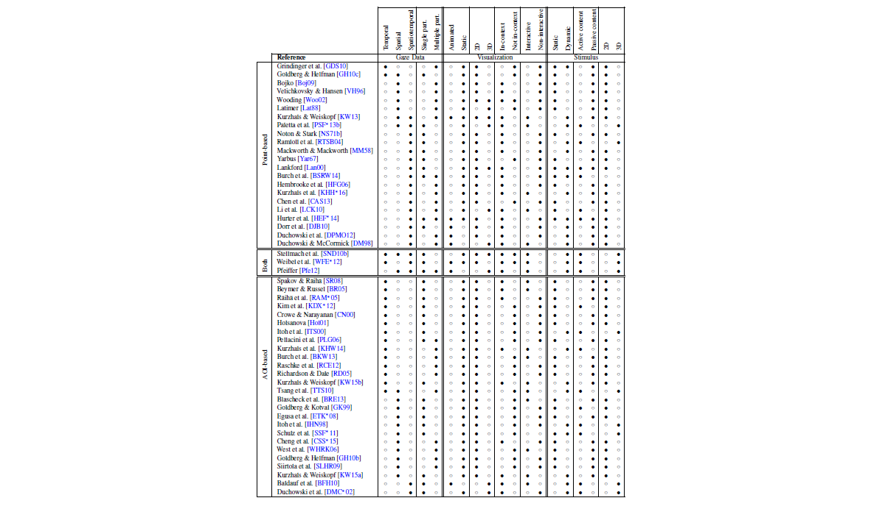
Visualization of Eye Tracking Data: A Taxonomy and Survey (2017)
T. Blascheck, K. Kurzhals, M. Raschke, M. Burch, D. Weiskopf, T. Ertl
This survey provides an introduction into eye tracking visualization with an overview of existing techniques. Eye tracking is important for evaluating user behaviour. Analysing eye tracking data is typically done quantitatively, applying statistical methods. However, in recent years, researchers have been increasingly using qualitative and exploratory analysis methods based on visualization techniques. For this state‐of‐the‐art report, we investigated about 110 research papers presenting visualization techniques for eye tracking data. We classified these visualization techniques and identified two main categories: point‐based methods and methods based on areas of interest. Additionally, we conducted an expert review asking leading eye tracking experts how they apply visualization techniques in their analysis of eye tracking data. Based on the experts' feedback, we identified challenges that have to be tackled in the future so that visualizations will become even more widely applied in eye tracking research.
Computer Graphics Forum
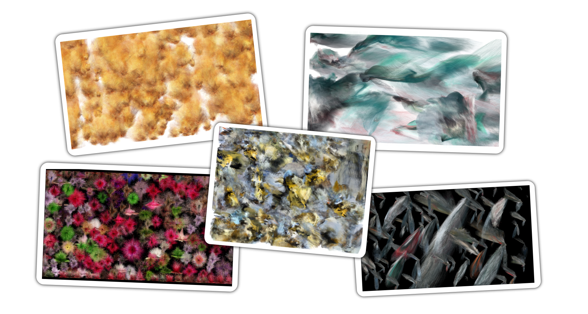
FlowBrush: Optical Flow Art (2017)
K. Kurzhals, M. Stoll, A. Bruhn, D. Weiskopf
The depiction of motion in static representations has a long tradition in art and science alike. Often, motion is depicted by spatio-temporal summarizations that try to preserve as much information of the original dynamic content as possible. In our approach to depicting motion, we remove the spatial constraints and generate new content steered by the temporal changes in motion. Applying particle steering in combination with the dynamic color palette of the video content, we can create a wide range of different image styles. With recorded videos, or by live interaction with a webcam, one can influence the resulting image. We provide a set of intuitive parameters to affect the style of the result, the final image content depends on the video input. Based on a collection of results gathered from test users, we discuss example styles that can be achieved with FlowBrush. In general, our approach provides an open sandbox for creative people to generate aesthetic images from any video content they apply.
Symposium on Computational Aesthetics
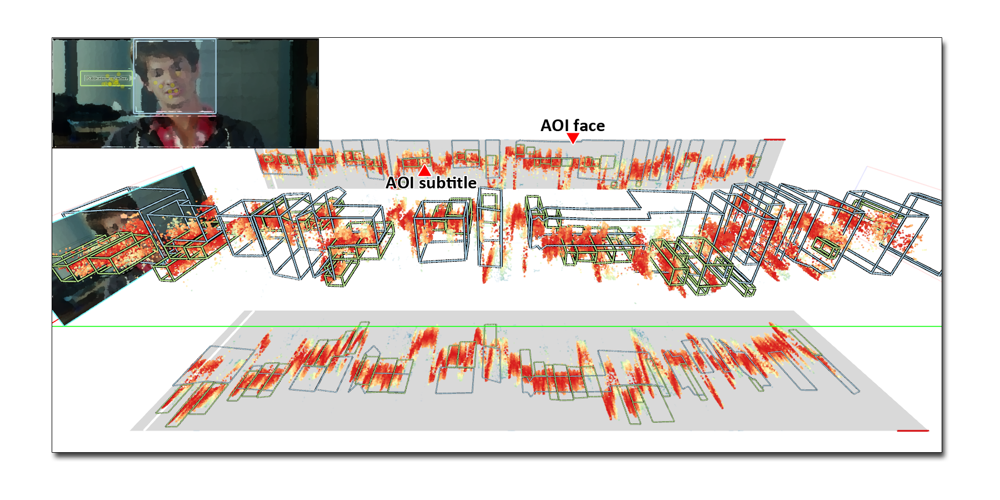
Close to the Action: Eye-Tracking Evaluation of Speaker-Following Subtitles (2017)
K. Kurzhals, E. Cetinkaya, Y. Hu, W. Wang, D. Weiskopf
The incorporation of subtitles in multimedia content plays an important role in communicating spoken content. For example, subtitles in the respective language are often preferred to expensive audio translation of foreign movies. The traditional representation of subtitles displays text centered at the bottom of the screen. This layout can lead to large distances between text and relevant image content, causing eye strain and even that we miss visual content. As a recent alternative, the technique of speaker-following subtitles places subtitle text in speech bubbles close to the current speaker. We conducted a controlled eye-tracking laboratory study (n = 40) to compare the regular approach (center-bottom subtitles) with content-sensitive, speaker-following subtitles. We compared different dialog-heavy video clips with the two layouts. Our results show that speaker-following subtitles lead to higher fixation counts on relevant image regions and reduce saccade length, which is an important factor for eye strain.
CHI Conference on Human Factors in Computing Systems
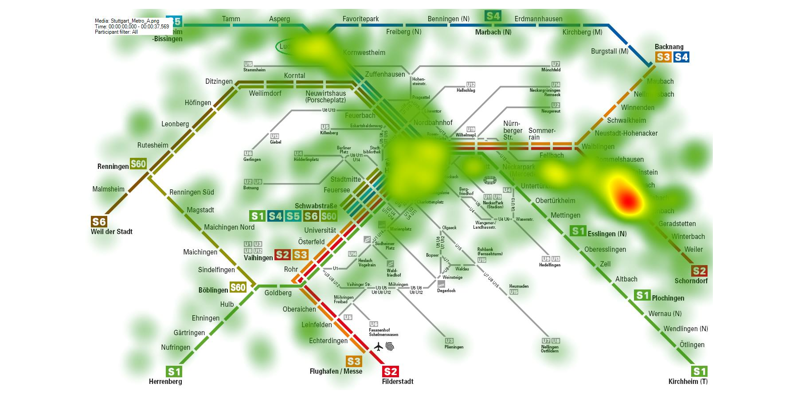
User Performance and Reading Strategies for Metro Maps: An Eye Tracking Study (2017)
R. Netzel, B. Ohlhausen, K. Kurzhals, R. Woods, M. Burch, D. Weiskopf
We conducted a controlled empirical eye tracking study with 40 participants using schematic metro maps. The study focused on two aspects: determining different reading strategies and assessing user performance. We considered the following factors: color encoding (color vs. gray-scale), map complexity (three levels), and task difficulty (three levels). There was one type of task: find a route from a start to a target location and state the number of transfers that have to be performed. To identify reading strategies, we annotated fixations of scanpaths, computed a transition matrix of each annotated scanpath, and used these matrices as input to cluster scanpaths into groups of similar behavior. We show how these reading strategies relate to the geodesic structure of the scanpaths' fixations projected onto the geodesic line that connects start and target locations. The analysis of the eye tracking data is complemented by statistical inference working on two eye tracking metrics (average fixation duration and saccade length). User performance was evaluated with a statistical analysis of task correctness and completion time. Our study shows that the design factors have a significant impact on user task performance. Also, we were able to identify typical reading strategies like directly finding a path from start to target location. Often, participants check the correctness of their result multiple times by moving back and forth between start and target. Our findings also indicate that the choice of reading strategies does not depend on whether color or gray-scale encoding is used.
Spatial Cognition & Computation
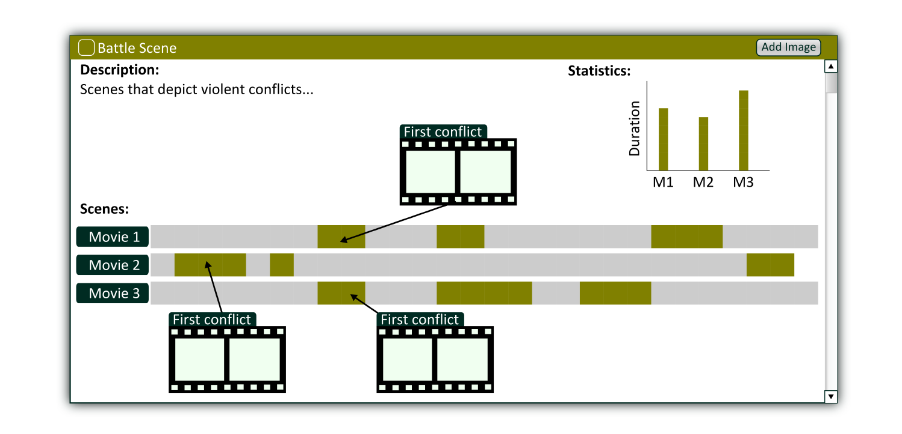
A Visual Analytics Approach for Semantic Multi-Video Annotation (2017)
M. John, K. Kurzhals, S. Koch, D. Weiskopf
The annotation of video material plays an important role in many Digital Humanities research fields including arts, political sciences, and cultural and historical studies. The annotations are typically assigned manually and convey rich semantics in accordance with the respective research question. In this work, we present the concept of a visual analytics approach that enables researchers to annotate multiple video sources in parallel. It combines methods from the fields of natural language processing and computer vision to support the manual annotation process with automatically extracted lowlevel characteristics. The benefits of our approach are twofold. With the extracted annotations and their visual mapping onto a suitable overview visualization, we support scholars in finding the relevant sections for their high-level annotations on the one hand, and on the other hand, we offer an environment that lets them compare and analyze such annotations in several videos at once. Our concept can be flexibly extended with additional processing methods to simplify annotation tasks further.
Workshop on Visualization for the Digital Humanities
2016
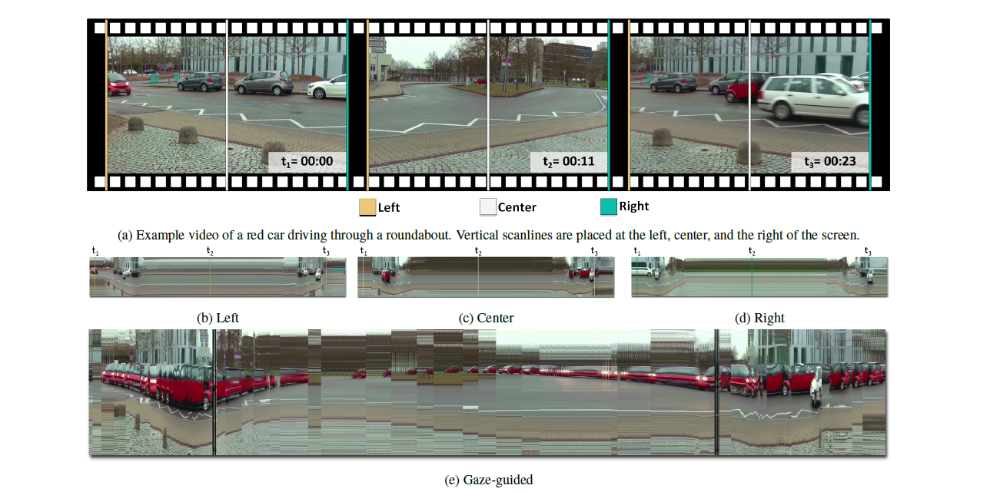
Visualizing Eye Tracking Data with Gaze-Guided Slit-Scans (2016)
K. Kurzhals, D. Weiskopf
The slit-scan technique is applied as a means to create artistic static and dynamic representations of motion in videos by arranging small slits of each video frame next to each other. This technique produces compact representations evenfor long timespansof recorded video material. We adapt this approach for the comparison of eye tracking data from multiple participants watching video. We adjust the slit position according to the current gaze coordinates of a participant and display the visual attention in context of the underlying stimulus over time. With additional encodings for the absolute horizontal and vertical position of a gaze point, we present a new visualization technique for scanpath representation.
Workshop on Eye Tracking and Visualization
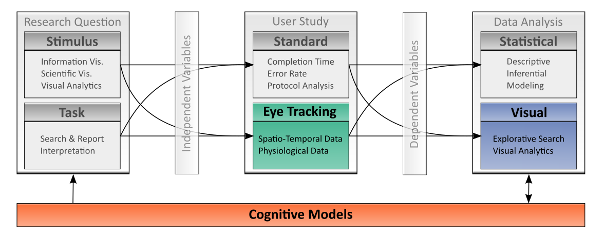
Eye Tracking Evaluation of Visual Analytics (2016)
K. Kurzhals, B. Fisher, M. Burch, D. Weiskopf
The application of eye tracking for the evaluation of humans’ viewing behavior is a common approach in psychological research. So far, the use of this technique for the evaluation of visual analytics and visualization is less prominent. We investigate recent scientific publications from the main visualization and visual analytics conferences and journals, as well as related research fields that include an evaluation by eye tracking. Furthermore, we provide an overview of evaluation goals that can be achieved by eye tracking and state-of-the-art analysis techniques for eye tracking data. Ideally, visual analytics leads to a mixed-initiative cognitive system where the mechanism of distribution is the interaction of the user with the visualization environment. Therefore, we also include a discussion of cognitive approaches and models to include the user in the evaluation process. Based on our review of the current use of eye tracking evaluation in our field and the cognitive theory, we propose directions for future research on evaluation methodology, leading to the grand challenge of developing an evaluation approach to the mixed-initiative cognitive system of visual analytics.
Information Visualization
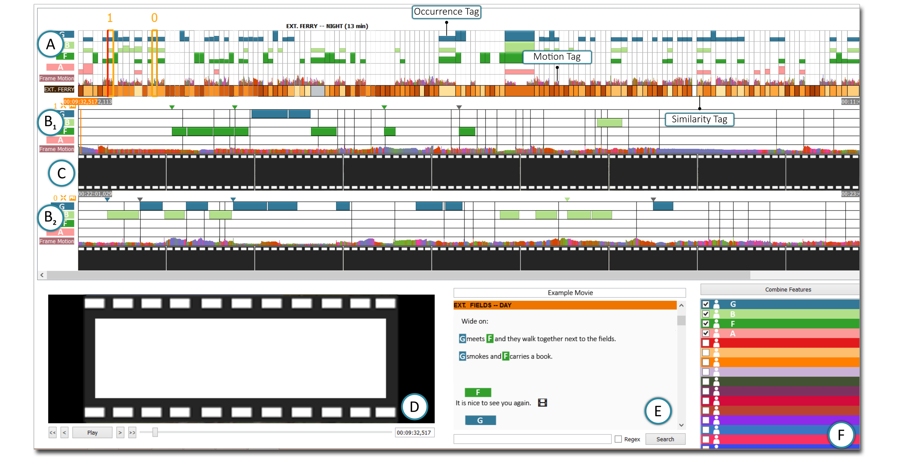
Visual Movie Analytics (2016)
K. Kurzhals, M. John, F. Heimerl, P. Kuznecov, D. Weiskopf
The analysis of inherent structures of movies plays an important role in studying stylistic devices and specific, content-related questions. Examples are the analysis of personal constellations in movie scenes, dialogue-based content analysis, or the investigation of image-based features. We provide a visual analytics approach that supports the analytical reasoning process to derive higher level insights about the content on a semantic level. Combining automatic methods for semantic scene analysis based on script and subtitle text, we perform a low-level analysis of the data automatically. Our approach features an interactive visualization that allows a multilayer interpretation of descriptive features to characterize movie content. For semantic analysis, we extract scene information from movie scripts and match them with the corresponding subtitles. With text- and image-based query techniques, we facilitate an interactive comparison of different movie scenes on an image and on a semantic level. We demonstrate how our approach can be applied for content analysis on a popular Hollywood movie.
IEEE Transactions on Multimedia
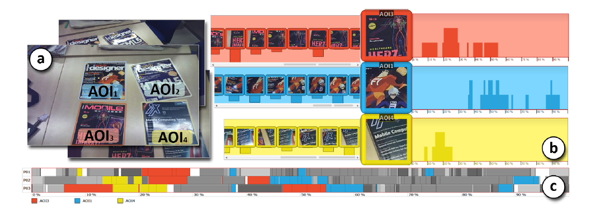
Visual Analytics for Mobile Eye Tracking (2016)
K. Kurzhals, M. Hlawatsch, C. Seeger, D. Weiskopf
The analysis of eye tracking data often requires the annotation of areas of interest (AOIs) to derive semantic interpretations of human viewing behavior during experiments. This annotation is typically the most time-consuming step of the analysis process. Especially for data from wearable eye tracking glasses, every independently recorded video has to be annotated individually and corresponding AOIs between videos have to be identified. We provide a novel visual analytics approach to ease this annotation process by image-based, automatic clustering of eye tracking data integrated in an interactive labeling and analysis system. The annotation and analysis are tightly coupled by multiple linked views that allow for a direct interpretation of the labeled data in the context of the recorded video stimuli. The components of our analytics environment were developed with a user-centered design approach in close cooperation with an eye tracking expert. We demonstrate our approach with eye tracking data from a real experiment and compare it to an analysis of the data by manual annotation of dynamic AOIs. Furthermore, we conducted an expert user study with 6 external eye tracking researchers to collect feedback and identify analysis strategies they used while working with our application.
IEEE Transactions on Visualization and Computer Graphics
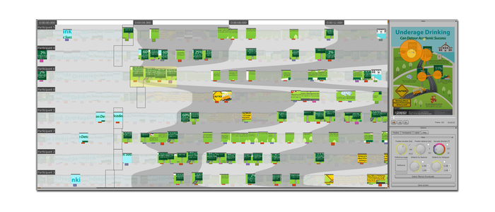
Fixation-Image Charts (2016)
K. Kurzhals, M. Hlawatsch, M. Burch, D. Weiskopf
We facilitate the comparative visual analysis of eye tracking data from multiple participants with a visualization that represents the temporal changes of viewing behavior. Common approaches to visually analyze eye tracking data either occlude or ignore the underlying visual stimulus, impairing the interpretation of displayed measures. We introduce fixation-image charts: a new technique to display the temporal changes of fixations in the context of the stimulus without visual overlap between participants. Fixation durations, the distance and direction of saccades between consecutive fixations, as well as the stimulus context can be interpreted in one visual representation. Our technique is not limited to static stimuli, but can be applied to dynamic stimuli as well. Using fixation metrics and the visual similarity of stimulus regions, we complement our visualization technique with an interactive filter concept that allows for the identification of interesting fixation sequences without the time-consuming annotation of areas of interest. We demonstrate how our technique can be applied to different types of stimuli to perform a range of analysis tasks; and discuss advantages and shortcomings derived from a preliminary user study.
ACM Symposium on Eye Tracking Research and Applications
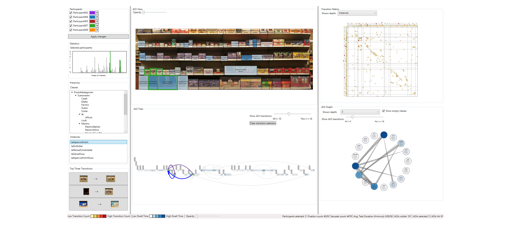
AOI Hierarchies for Visual Exploration of Fixation Sequences (2016)
T. Blascheck, K. Kurzhals, M. Raschke, S. Strohmaier, D. Weiskopf, T. Ertl
In eye tracking studies a complex visual stimulus requires the definition of many areas of interest (AOIs). Often these AOIs have an inherent, nested hierarchical structure that can be utilized to facilitate analysis tasks. We discuss how this hierarchical AOI structure in combination with appropriate visualization techniques can be applied to analyze fixation sequences on differently aggregated levels. An AOI View, AOI Tree, AOI Matrix, and AOI Graph enable a bottom-up and top-down evaluation of fixation sequences. We conducted an expert review and compared our techniques to current state-of-the-art visualization techniques in eye movement research to further improve and extend our approach. To show how our approach is used in practice, we evaluate fixation sequences collected during a study where 101 AOIs are organized hierarchically.
ACM Symposium on Eye Tracking Research and Applications
2015
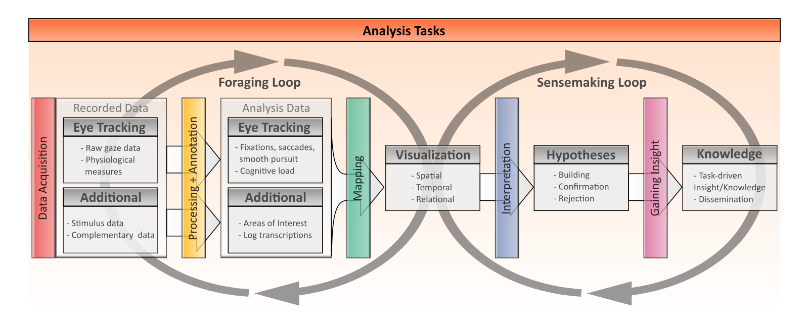
A Task-Based View on the Visual Analysis of Eye-Tracking Data (2015)
K. Kurzhals, M. Burch, T. Blascheck, G. Andrienko, N. Andrienko, D. Weiskopf
The visual analysis of eye movement data has become an emerging field of research leading to many new visualization techniques in recent years. These techniques provide insight beyond what is facilitated by traditional attention maps and gaze plots, providing important means to support statistical analysis and hypothesis building. There is no single “all-in-one” visualization to solve all possible analysis tasks. In fact, the appropriate choice of a visualization technique depends on the type of data and analysis task. We provide a taxonomy of analysis tasks that is derived from literature research of visualization techniques and embedded in our pipeline model of eye-tracking visualization. Our task taxonomy is linked to references to representative visualization techniques and, therefore, it is a basis for choosing appropriate methods of visual analysis. We also elaborate on how far statistical analysis with eye-tracking metrics can be enriched by suitable visualization and visual analytics techniques to improve the extraction of knowledge during the analysis process.
Workshop on Eye Tracking and Visualization
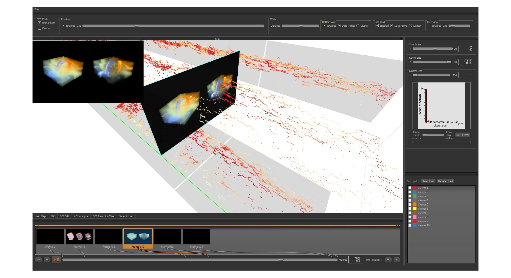
Eye Tracking in Computer-Based Visualization (2015)
K. Kurzhals, M. Burch, T. Pfeiffer, D. Weiskopf
ye tracking is popular in many fields, including marketing, psychology, and human-computer interaction. Advances in technology have led to lower prices for eye-tracking hardware and, consequently, a widespread availability of affordable devices. Accordingly, we’ve seen a trend toward a broader use of eye tracking in other areas as well.
Computing in Science & Engineering
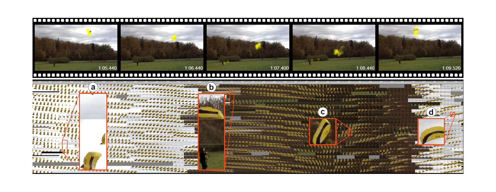
Gaze Stripes: Image-Based Visualization of Eye Tracking Data (2015)
K. Kurzhals, M. Hlawatsch, F. Heimerl, M. Burch, T. Ertl, D. Weiskopf
We present a new visualization approach for displaying eye tracking data from multiple participants. We aim to show the spatio-temporal data of the gaze points in the context of the underlying image or video stimulus without occlusion. Our technique, denoted as gaze stripes, does not require the explicit definition of areas of interest but directly uses the image data around the gaze points, similar to thumbnails for images. A gaze stripe consists of a sequence of such gaze point images, oriented along a horizontal timeline. By displaying multiple aligned gaze stripes, it is possible to analyze and compare the viewing behavior of the participants over time. Since the analysis is carried out directly on the image data, expensive post-processing or manual annotation are not required. Therefore, not only patterns and outliers in the participants' scanpaths can be detected, but the context of the stimulus is available as well. Furthermore, our approach is especially well suited for dynamic stimuli due to the non-aggregated temporal mapping. Complementary views, i.e., markers, notes, screenshots, histograms, and results from automatic clustering, can be added to the visualization to display analysis results. We illustrate the usefulness of our technique on static and dynamic stimuli. Furthermore, we discuss the limitations and scalability of our approach in comparison to established visualization techniques.
IEEE Transactions on Visualization and Computer Graphics
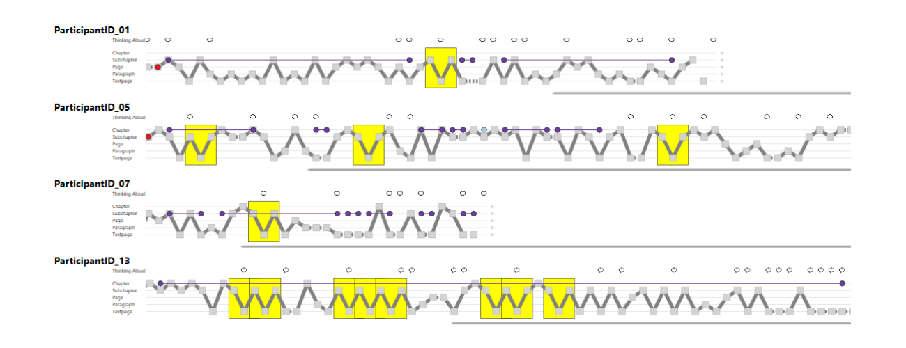
VA2: A Visual Analytics Approach for Evaluating Visual Analytics Applications (2015)
T. Blascheck, M. John, K. Kurzhals, S. Koch, T. Ertl
Evaluation has become a fundamental part of visualization research and researchers have employed many approaches from the field of human-computer interaction like measures of task performance, thinking aloud protocols, and analysis of interaction logs. Recently, eye tracking has also become popular to analyze visual strategies of users in this context. This has added another modality and more data, which requires special visualization techniques to analyze this data. However, only few approaches exist that aim at an integrated analysis of multiple concurrent evaluation procedures. The variety, complexity, and sheer amount of such coupled multi-source data streams require a visual analytics approach. Our approach provides a highly interactive visualization environment to display and analyze thinking aloud, interaction, and eye movement data in close relation. Automatic pattern finding algorithms allow an efficient exploratory search and support the reasoning process to derive common eye-interaction-thinking patterns between participants. In addition, our tool equips researchers with mechanisms for searching and verifying expected usage patterns. We apply our approach to a user study involving a visual analytics application and we discuss insights gained from this joint analysis. We anticipate our approach to be applicable to other combinations of evaluation techniques and a broad class of visualization applications.
IEEE Transactions on Visualization and Computer Graphics
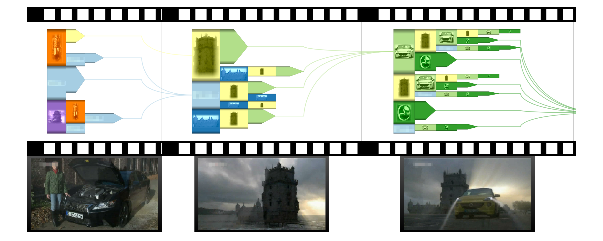
AOI Transition Trees (2015)
K. Kurzhals, D. Weiskopf
The analysis of transitions between areas of interest (AOIs) in eye tracking data provides insight into visual reading strategies followed by participants. We present a new approach to investigate eye tracking data of multiple participants, recorded from video stimuli. Our new transition trees summarize sequence patterns of all participants over complete videos. Shot boundary information from the video is used to divide the dynamic eye tracking information into time spans of similar semantics. AOI transitions within such a time span are modeled as a tree and visualized by an extended icicle plot that shows transition patterns and frequencies of transitions. Thumbnails represent AOIs in the visualization and allow for an interpretation of AOIs and transitions between them without detailed knowledge of the video stimulus. A sequence of several shots is visualized by connecting the respective icicle plots with curved links that indicate the correspondence of AOIs. We compare the technique with other approaches that visualize AOI transitions. With our approach, common transition patterns in eye tracking data recorded for several participants can be identified easily. In our use case, we demonstrate the scalability of our approach concerning the number of participants and investigate a video data set with the transition tree visualization.
Graphics Interface
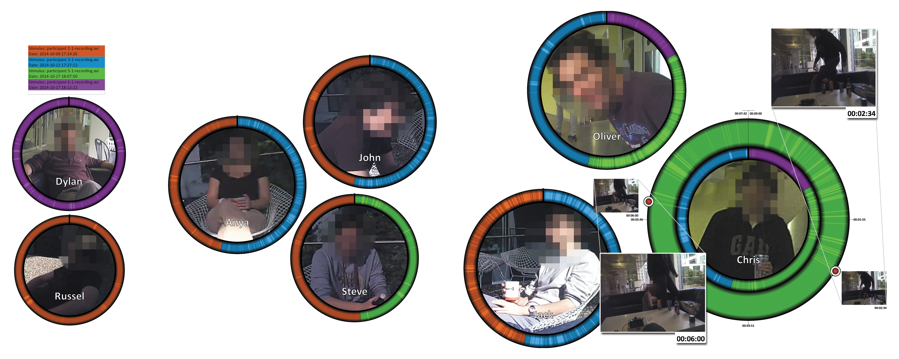
Eye Tracking for Personal Visual Analytics (2015)
K. Kurzhals, D. Weiskopf
In many research fields, eye tracking has become an established method to analyze the distribution of visual attention in various scenarios. In the near future, eye tracking is expected to become ubiquitous, recording massive amounts of data in everyday situations. To make use of this data, new approaches for personal visual analytics will be necessary to make the data accessible, allowing nonexpert users to re-experience interesting events and benefit from self-reflection. This article discusses how eye tracking fits in the context of personal visual analytics, the challenges that arise with its application to everyday situations, and the research perspectives of personal eye tracking. As an example, the authors present a technique for representing areas of interest (AOIs) from multiple videos: the AOI cloud. They apply this technique to examine a user's personal encounters with other people.
IEEE Computer Graphics and Applications
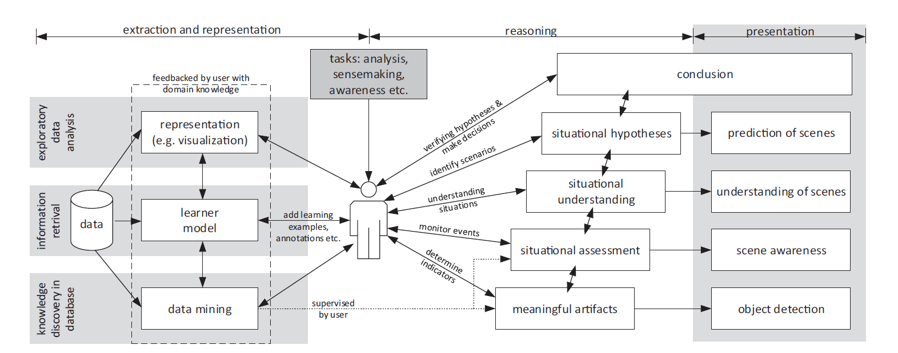
Visual Analytics for Video Applications (2015)
P. Tanisaro, J. Schöning, K. Kurzhals, G. Heidemann, D. Weiskopf
In this article, we describe the concept of video visual analytics with a special focus on the reasoning process in the sensemaking loop. To illustrate this concept with real application scenarios, two visual analytics tools one for video surveillance and one for eye-tracking data analysis that cover the sensemaking process, are discussed in detail. Various aspects of video surveillance such as browsing and playback, situational awareness, and deduction of reasoning from visual analytics are examined. On account of the visual analysis of recorded eye tracking data from watching video, application features such as a space-time cube, spatio-temporal clustering, and automatic comparison of multiple participants are reviewed of how they can support the analytical process. Based on this knowledge, open challenges in video visual analytics are discussed in the conclusion.
it - Information Technology
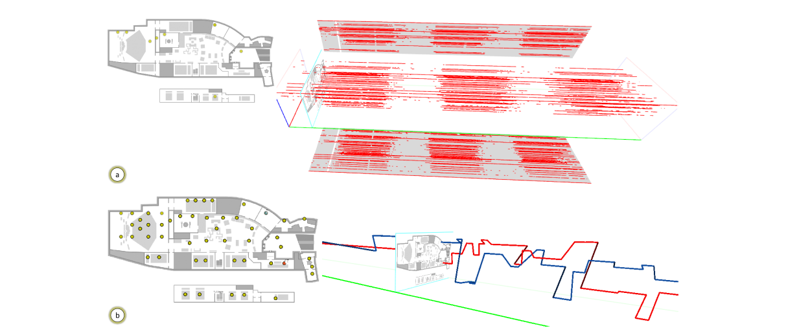
Visual Analysis of Visitor Behavior for Indoor Event Management (2015)
R. Krüger, F. Heimerl, Q. Han, K. Kurzhals, S. Koch, T. Ertl
The analysis of persons' indoor movement and behavior patterns can be of great value. Such an analysis enables managers and organizers in understanding the needs of customers and visitors. Event planning for exhibitions, festivals, and conferences, but also optimization of malls and stores can benefit from recorded visitor data. To show the advantage of visual analysis of movement information, we apply a new visual approach to a large indoor dataset, recorded at the republican conference in 2013. We present three different interactive visualization methods to reveal patterns, to deduce behavior from participants' movements, and to show transitions between sessions and topics. For this, we apply a spectral hierarchical clustering approach and visualize results in a pixel based scarf plot. Additionally, we introduce a prediction model and visualization which serves as a monitoring tool for visitor attraction and distribution and helps to prevent bottleneck situations. We evaluate our approach by showing its applicability in a case study and validate our model on ground truth data.
Hawaii International Conference on System Sciences
2014
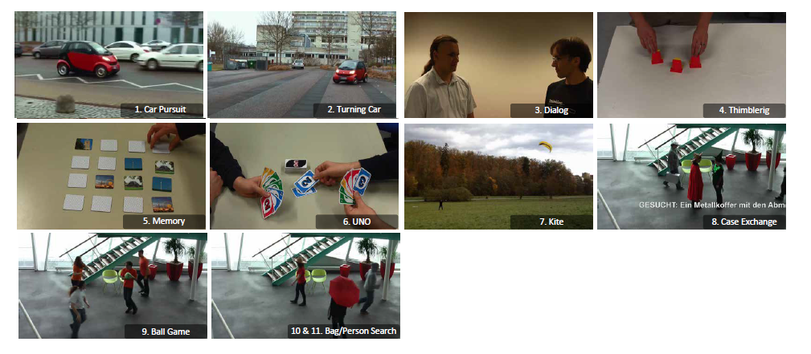
Benchmark Data for Evaluating Visualization and Analysis Techniques for Eye Tracking for Video Stimuli (2014)
K. Kurzhals, C. F. Bopp, J. Bässler, F. Ebinger, D. Weiskopf
For the analysis of eye movement data, an increasing number of analysis methods have emerged to examine and analyze different aspects of the data. In particular, due to the complex spatio-temporal nature of gaze data for dynamic stimuli, there has been a need and recent trend toward the development of visualization and visual analytics techniques for such data. With this paper, we provide benchmark data to test visualization and visual analytics methods, but also other analysis techniques for gaze processing. In particular, for eye tracking data from video stimuli, existing datasets often provide few information about recorded eye movement patterns and, therefore, are not comprehensive enough to allow for a faithful assessment of the analysis methods. Our benchmark data consists of three ingredients: the dynamic stimuli in the form of video, the eye tracking data, and annotated areas of interest. We designed the video stimuli and the tasks for the participants of the eye tracking experiments in a way to trigger typical viewing patterns, including attentional synchrony, smooth pursuit, and switching of the focus of attention. In total, we created 11 videos with eye tracking data acquired from 25 participants.
Workshop on Beyond Time and Errors: Novel Evaluation Methods for Visualization
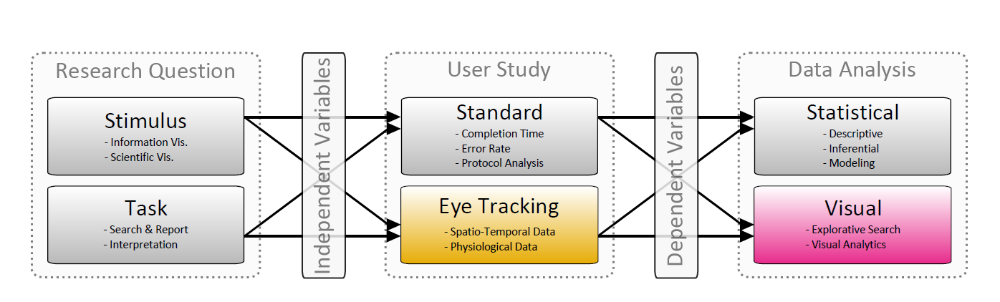
Evaluating Visual Analytics with Eye Tracking (2014)
K. Kurzhals, B. Fisher, M. Burch, D. Weiskopf
The application of eye tracking for the evaluation of humans' viewing behavior is a common approach in psychological research. So far, the use of this technique for the evaluation of visual analytics and visualization is less prominent. We investigate recent scientific publications from the main visualization and visual analytics conferences and journals that include an evaluation by eye tracking. Furthermore, we provide an overview of evaluation goals that can be achieved by eye tracking and state-of-the-art analysis techniques for eye tracking data. Ideally, visual analytics leads to a mixed-initiative cognitive system where the mechanism of distribution is the interaction of the user with visualization environments. Therefore, we also include a discussion of cognitive approaches and models to include the user in the evaluation process. Based on our review of the current use of eye tracking evaluation in our field and the cognitive theory, we propose directions of future research on evaluation methodology, leading to the grand challenge of developing an evaluation approach to the mixed-initiative cognitive system of visual analytics.
Workshop on Beyond Time and Errors: Novel Evaluation Methods for Visualization
Visual Task Solution Strategies in Public Transport Maps (2014)
M. Burch, K. Kurzhals, D. Weiskopf
Public transport maps are used as visual aid for travellers to support the route finding task from a start to a destination. Although those maps are designed in a user-friendly manner by applying effective layouts, color codings, as well as intuitive symbolic representations it is unclear which perceptual, readability, and understandability problems the human user has when looking at those maps. In a preliminary eye tracking experiment with 8 participants, we asked people to find a way between highlighted start and destination stations on different maps. Based on a visual scanpath analysis, we discovered a set of different visual task solution strategies that will build the foundation for hypotheses to evaluate in a final user study.
ET4S @ GIScience
State-of-the-Art of Visualization for Eye Tracking Data (2014)
T. Blascheck, K. Kurzhals, M. Raschke, M. Burch, D. Weiskopf, T. Ertl
Eye tracking technology is becoming easier and cheaper to use, resulting in its increasing application to numerous fields of research. The data collected during an eye tracking experiment can be analyzed by statistical methods and/or with visualization techniques. Visualizations can reveal characteristics of fixations, saccades, and scanpath structures. In this survey, we present an overview of visualization techniques for eye tracking data and describe their functionality. We classify the visualization techniques using nine categories. The categories are based on properties of eye tracking data, including aspects of the stimuli and the viewer, and on properties of the visualization techniques. The classification of about 90 publications including technical as well as application papers with modifications of common visualization techniques are described in more detail. We finally present possible directions for further research in the field of eye tracking data visualization.
EuroVis State of the Art Reports
How Do People Read Metro Maps? An Eye Tracking Study (2014)
M. Burch, K. Kurzhals, M. Raschke, T. Blascheck, D. Weiskopf
Metro maps have many benefits over traditional geospatial maps. A common task to be solved when traveling in a foreign city is to find an economical and efficient way from the start to the destination point. When metro maps become larger containing several different lines and a large number of stations with possible change points, this task gets more complicated. In this paper, we present the results of an eye tracking experiment with the goal to investigate difficulties that people have when reading such maps. To this end, we showed participants several real-world metro maps and asked them to perform tasks of different complexity, ie routes with and without highlighted start and destination stations. The major result of this study is that the number of stations, lines, and highlights have an impact on task completion times and on visual task solution strategies.
Workshop on Schematic Mapping
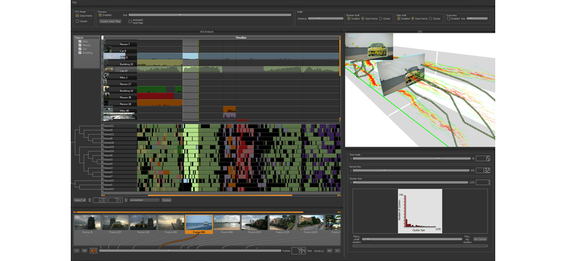
ISeeCube - Visual Analysis of Gaze Data for Video (2014)
K. Kurzhals, F. Heimerl, D. Weiskopf
We introduce a new design for the visual analysis of eye tracking data recorded from dynamic stimuli such as video. ISeeCube includes multiple coordinated views to support different aspects of various analysis tasks. It combines methods for the spatiotemporal analysis of gaze data recorded from unlabeled videos as well as the possibility to annotate and investigate dynamic Areas of Interest (AOIs). A static overview of the complete data set is provided by a space-time cube visualization that shows gaze points with densitybased color mapping and spatiotemporal clustering of the data. A timeline visualization supports the analysis of dynamic AOIs and the viewers' attention on them. Individual and similar viewing patterns of different viewers can be clustered by their Levenshtein distance, an attention map, or the transitions between AOIs. With the provided visual analytics techniques, the exploration of eye tracking data recorded from several viewers is supported for a wide range of various analysis tasks.
ACM Symposium on Eye Tracking Research and Applications
2013
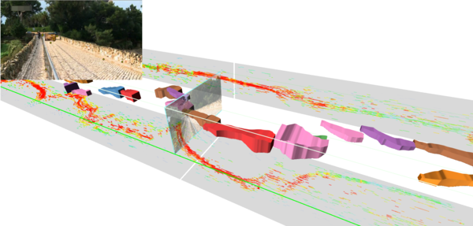
Space-Time Visual Analytics of Eye-Tracking Data for Dynamic Stimuli (2013)
K.Kurzhals, D. Weiskopf
We introduce a visual analytics method to analyze eye movement data recorded for dynamic stimuli such as video or animated graphics. The focus lies on the analysis of data of several viewers to identify trends in the general viewing behavior, including time sequences of attentional synchrony and objects with strong attentional focus. By using a space-time cube visualization in combination with clustering, the dynamic stimuli and associated eye gazes can be analyzed in a static 3D representation. Shotbased, spatiotemporal clustering of the data generates potential areas of interest that can be filtered interactively. We also facilitate data drill-down: the gaze points are shown with density-based color mapping and individual scan paths as lines in the space-time cube. The analytical process is supported by multiple coordinated views that allow the user to focus on different aspects of spatial and temporal information in eye gaze data. Common eye-tracking visualization techniques are extended to incorporate the spatiotemporal characteristics of the data. For example, heat maps are extended to motion-compensated heat maps and trajectories of scan paths are included in the space-time visualization. Our visual analytics approach is assessed in a qualitative users study with expert users, which showed the usefulness of the approach and uncovered that the experts applied different analysis strategies supported by the system.
IEEE Transactions on Visualization and Computer Graphics
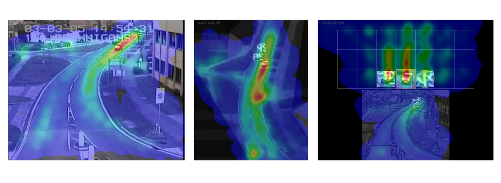
Evaluation of Attention‐Guiding Video Visualization (2013)
K. Kurzhals, M. Höferlin, D. Weiskopf
We investigate four different variants of attention‐guiding video visualization techniques that aim to help users distribute their attention equally among potential objects of interest: bounding box visualization, force‐directed visualization, top‐down visualization, grid visualization. Objects of interest are highlighted by rectangular shapes and then we concentrate on the manipulation of color, motion, and size. We conducted a controlled laboratory user study (n=25) to compare the four visualization techniques and the unmodified video material as baseline. We evaluated task performance and distribution of attention in a search task. These two properties become especially important when video material with numerous objects has to be observed. The distribution of attention was measured by eye tracking. Our results show that a more even distribution of attention between the objects can be achieved by attention‐guiding visualization, compared to unmodified video. Many participants feel more comfortable when they look at bounding boxes and the grid, but improvements in search task performance could not be confirmed.
Computer Graphics Forum
2012
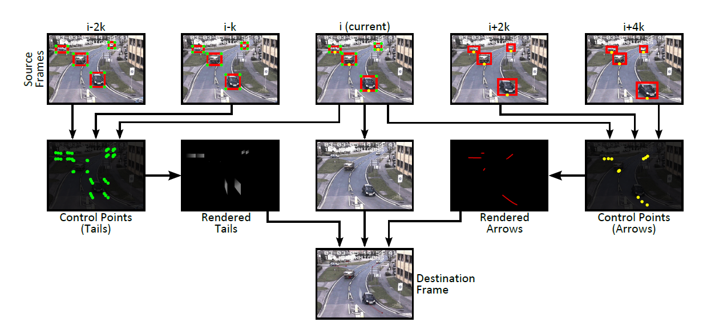
Evaluation of Fast-Forward Video Visualization (2012)
M. Hoeferlin, K. Kurzhals, B. Hoeferlin, G. Heidemann, D. Weiskopf
We evaluate and compare video visualization techniques based on fast-forward. A controlled laboratory user study (n = 24) was conducted to determine the trade-off between support of object identification and motion perception, two properties that have to be considered when choosing a particular fast-forward visualization. We compare four different visualizations: two representing the state-of-the-art and two new variants of visualization introduced in this paper. The two state-of-the-art methods we consider are frame-skipping and temporal blending of successive frames. Our object trail visualization leverages a combination of frame-skipping and temporal blending, whereas predictive trajectory visualization supports motion perception by augmenting the video frames with an arrow that indicates the future object trajectory. Our hypothesis was that each of the state-of-the-art methods satisfies just one of the goals: support of object identification or motion perception. Thus, they represent both ends of the visualization design. The key findings of the evaluation are that object trail visualization supports object identification, whereas predictive trajectory visualization is most useful for motion perception. However, frame-skipping surprisingly exhibits reasonable performance for both tasks. Furthermore, we evaluate the subjective performance of three different playback speed visualizations for adaptive fast-forward, a subdomain of video fast-forward.
IEEE Transactions on Visualization and Computer Graphics